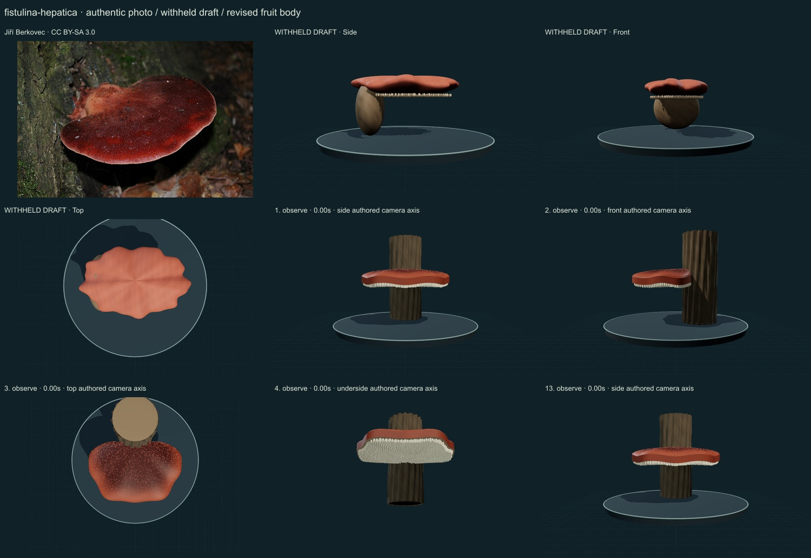
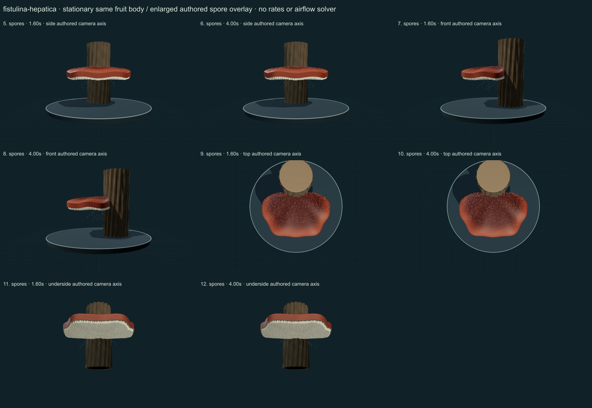

PhenoVoxel Archive · v0.6.25 · October25,2026
Beefsteak fungus
293 records after verified publication. Seven saved drafts held;257 missing to550, including250 without drafts. Release register.
The actual Czech Jiří Berkovec photograph was compared with selected Naturalis and Funga Nordica descriptions and primary regional-taxonomic context. The photograph does not expose the tubes; their separate construction is separately supported by the taxonomic text. No paper figures or measured coordinates were imported.
Jiří Berkovec · CC BY-SA 3.0. Source-labelled real organism reference; preparation, life-stage, location and selected phenotype do not establish all species variation or measured 3D anatomy. Resized inside 1000 px, flattened and JPEG encoded; no generative alteration.
Exact creator, source/license links and original/derivative checksums are retained in the linked data. The2025 Hericium paper is linked as a scholarly reference; its NC-ND figures are not reused. Additional copyrighted treatments/figures are not redistributed or sampled into material textures.
A selected broad red tongue-like bracket is laterally attached to an explicitly contextual woody support. Its rounded outline, closed margin and separate lower tubules replace the old undifferentiated disc and pebble-like support.
Darker red numerical pigment, muted wet sheen, fine upper papillae and pale open-ended tubule relief. No reference-photo pixels or calibrated reflectance.
Remaining: The bracket outline and attachment still look authored, tubule positions are idealized and bark support is contextual artwork. Fine tissue structure, guttation, age variation, real optical response, hyphal physiology and dimensions remain unmeasured or absent.
The same stationary fruit body is retained while an optional greatly enlarged authored spore-drift overlay starts at selected tube surfaces. Growth, decomposition, discharge mechanics and airflow are unavailable.
Partly stylized, unmeasured original educational reconstructions. Fine anatomy, age variation, tissue optics, dimensions and physiology remain incomplete. Enlarged spore dots are a teaching overlay with authored timing, not measured release, Buller-drop mechanics or an airflow solver. No independent specialist validation, scientific certification or accuracy percentage.
The underside camera temporarily hides contextual platform/grid. Contextual wood is authored support artwork, not a scanned host or proof of host specificity.
13 actual final nonblank main-viewer states individually inspected on two labelled sheets, with authentic photograph and withheld-draft comparison. Whole-body side/front/top, unobstructed underside and two representative overlay times per axis; qualitative author assessment, not independent specialist review.


Partly stylized, unmeasured original educational reconstructions. Fine anatomy, age variation, tissue optics, dimensions and physiology remain incomplete. Enlarged spore dots are a teaching overlay with authored timing, not measured release, Buller-drop mechanics or an airflow solver. No independent specialist validation, scientific certification or accuracy percentage. Prior285 species objects, including credited wolf/tiger meshes, are unchanged. Species-complex caveats remain visible. Recorded occurrences are not native ranges; legacy Protista/Monera are reporting conveniences.
Original geometry/controller MIT. Authentic photo portions retain the exact credited license; model-only frames contain original rendered geometry.
Exact findings, source scopes and screenshot hashes